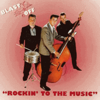

Blast Off - Rockin' To The Music (Album, 1997)
01 - Blast Off (2:29)
02 - The Way It's Meant To Be (3:09)
03 - Bim Bam (2:02)
04 - You Mostest Girl (2:08)
05 - On The Move (2:11)
06 - Rockin' To The Music (3:11)
07 - Don't Stop Loving Me (2:42)
08 - Such A Night (2:46)
09 - Make Like Rock 'n' Roll (2:17)
10 - Go For It (2:33)
11 - Crazy Legs (2:05)
12 - Mandy (2:44)
13 - I'm Bad (3:20)
14 - Diggin' The Boogie (2:32)
15 - More, More, More (2:10)
16 - The Stroll (2:25)
17 - Eel Pie Island (3:01)
18 - Let's Go Bopping Tonight (2:37)
19 - Your Baby Blue Eyes (2:19)
20 - Love That Girl (2:51)
© Pollytone Records :: [PEPCD 120]
Notes
Review
220/366 (Project 366)
Very melodious and strong Rockabilly Rock'n'Roll with fifties, revival and general charm mood.